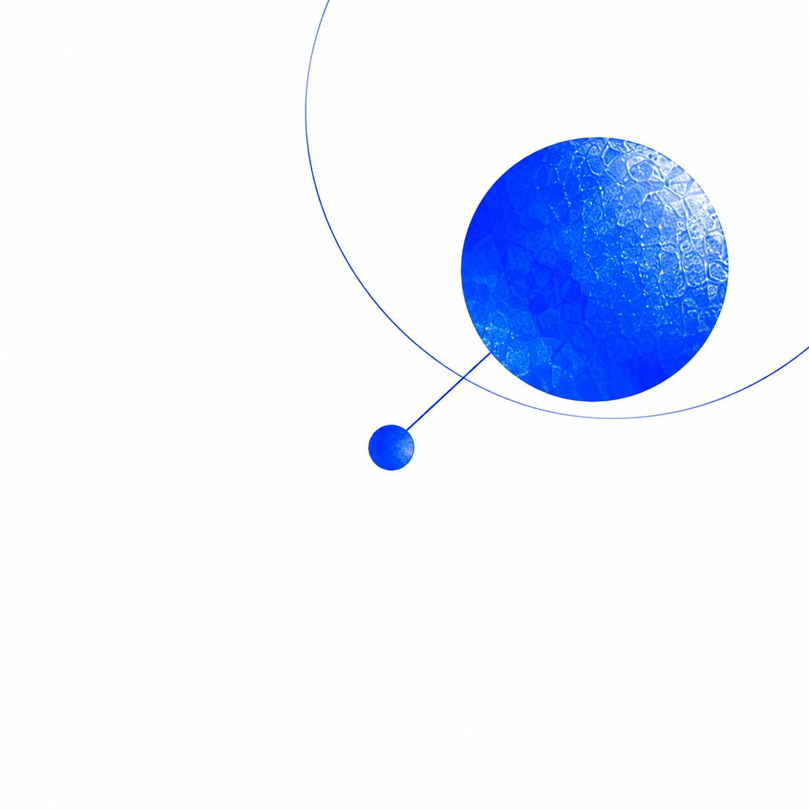
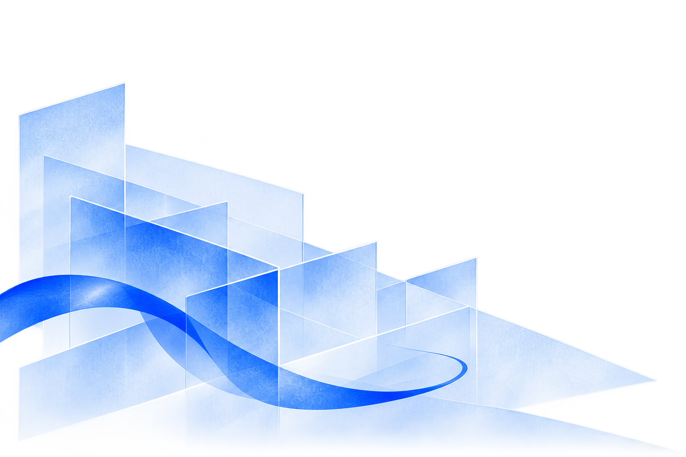
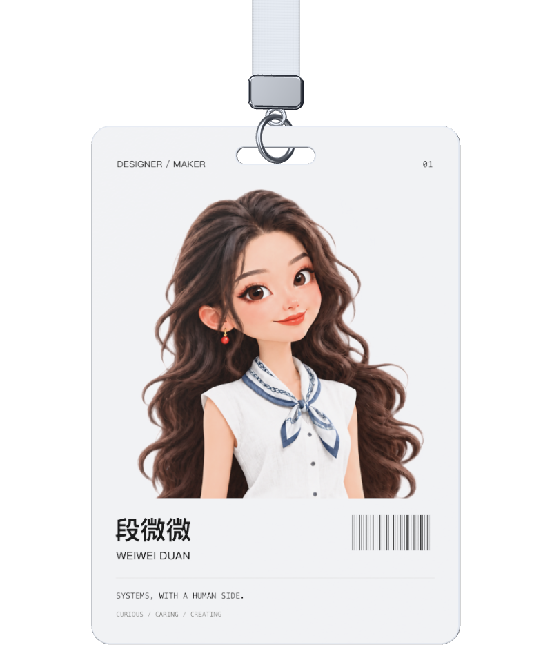

让复杂系统，
更好地为人工作。
Expert Designer · 产品设计专家
我是段微微，长期做企业级基础设施与复杂产品设计，也把项目中的经验整理成设计系统，支持团队继续做好工作。
现在，我正借助 AI 改变自己的工作方式，亲手做一些想做的产品。希望技术带来的新可能，能落到具体的人和事上。




Expert Designer · 产品设计专家
我是段微微，长期做企业级基础设施与复杂产品设计，也把项目中的经验整理成设计系统，支持团队继续做好工作。
现在，我正借助 AI 改变自己的工作方式，亲手做一些想做的产品。希望技术带来的新可能，能落到具体的人和事上。